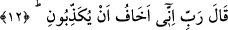
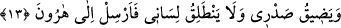

taaccüb içindir. Yani, onlar Allah’dan korkmazlar, îman ve itâat etmek sûretiyle
kendilerinden O’nun cezâsını uzaklaştırmazlar mı? Yâni ilâhî azabdan korkmaları,
inkardan el çekmeleri ve İsrâiloğulları’nı bırakmaları gerekir.
12. Mûsâ şöyle dedi: “Rabbim! Doğrusu, beni yalancılıkla suçlamalarından
korkuyorum.”
Bu cümle başlangıç cümlesidir. Sanki: “Mûsâ (a.s.) ne dedi?” denilmiş, bunun üzerine
şöyle cevap verilmiştir: “Mûsâ” (a.s.) Allah Teâlâ’ya tazarru ederek “şöyle dedi:
“Rabbim! Doğrusu, beni yalancılıkla suçlamalarından” peygamberliğimi ve
söylediklerimi baştan inkâr etmelerinden “korkuyorum.”
“
(korku)” zannedilen veya bilinen bir emâreden hareketle hoşa gitmeyen bir
şeyin olmasını beklemektir. Nitekim “
(ümit ve tamâ)” zannedilen veya
bilinen bir emâreden hareketle sevilen her şeyi beklemektir.
Büyüklerden biri der ki: “Mûsâ (a.s.)’ın korkusu, onlara şefkatinden dolayı idi.”
13. (Bu durumda) içim daralır, dilim dönmez; onun için Harun’a da elçilik ver.
Bu durumda “içim daralır,” yalanlama sebebiyle gönlüm daralır. Mûsâ (a.s.)’da
hiddet vardı. “Dilim dönmez;” dilim açılmaz ve düğümden dolayı gönül darlığım artar.
“
” bilinen uzuv ve onun kuvveti/gücüdür. Allah Teâlâ başka bir âyette şöyle
buyurmuştur: “Dilimden (şu) bağı çöz.” (Tâhâ, 20/27). Yani dilimin güç ve
kuvvetindeki bağı demektir. Çünkü bağ uzuv olan dilde değil onun kuvveti olan
konuşmada idi. Nitekim el-Müfredât’ta böyle geçmektedir.
“Onun için Harun’a da elçilik ver.” Tebliğde benim yardımcım olması için Cebrâil
(a.s.)’ı Hârun’a da gönder. Çünkü lisan bakımından o benden daha fasihtir. Hârun, Mûsâ
(a.s.)’ın büyük kardeşidir. Onu tebliğde benim şerikim/ortağım kıl da onun yardımıyla
Fir’avun taraftarlarının yanına gideyim.
Bilesin ki yalanlanmak, kalbin daralmasına sebep olur. Kalbin daralması da dilinde
tutukluk olan kimsenin konuşmakta zorlanmasına sebep olur. Çünkü kalp daraldığı
zaman ruh da sıkıntılanır. Tabîî olan harâret, kalbin içine etki eder. Kalb ve ruh içte
daralınca dilde tutukluk artar. İşte bundan dolayı Mûsâ (a.s.) kendisini
yalanlanmalarından korktuğunu söyleyerek söze başladı. Sonra ikinci olarak içinin
daralmasını, ardından üçüncü olarak dilinin dönmemesini zikretti ve kardeşi Hârun’u da